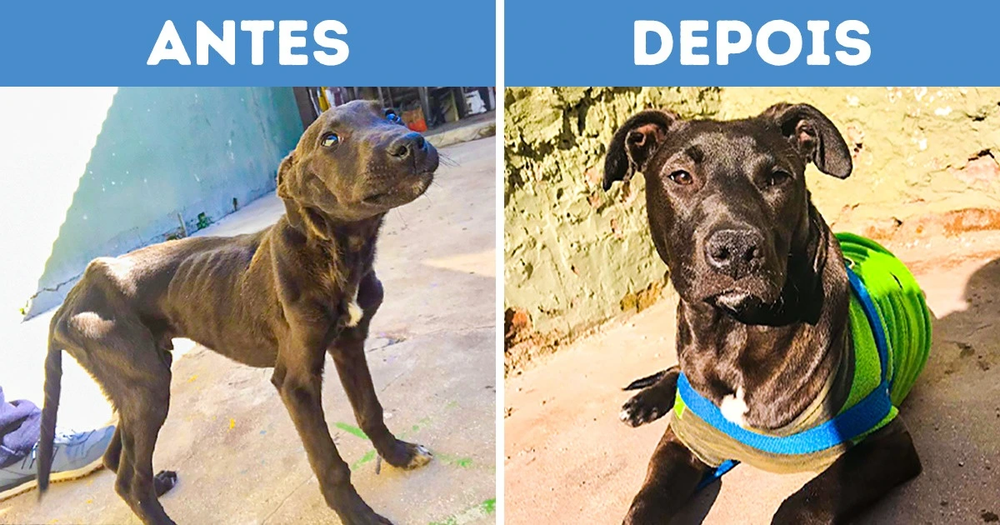
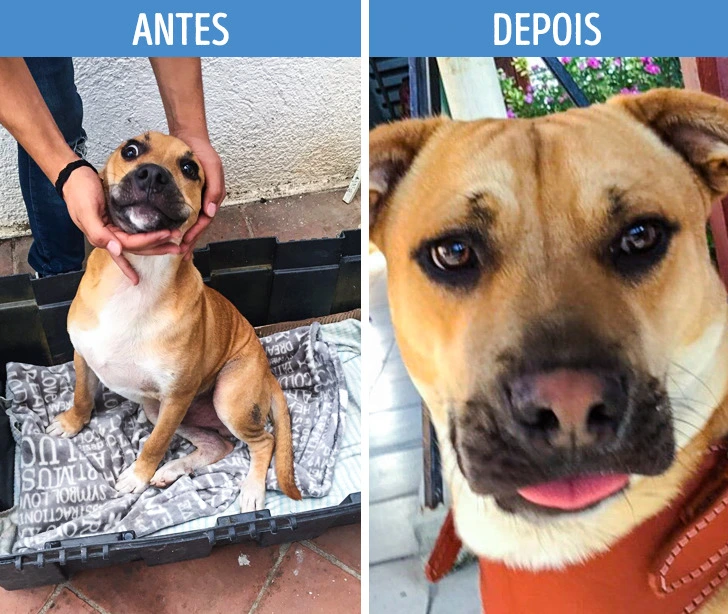
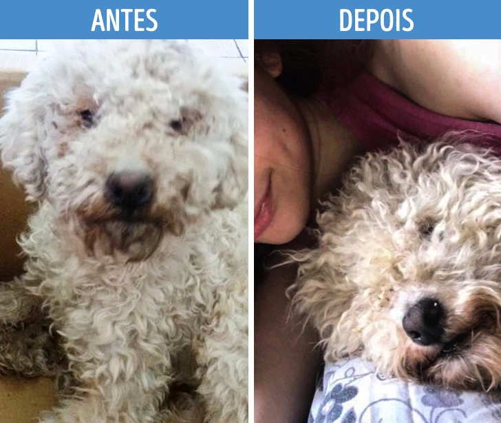
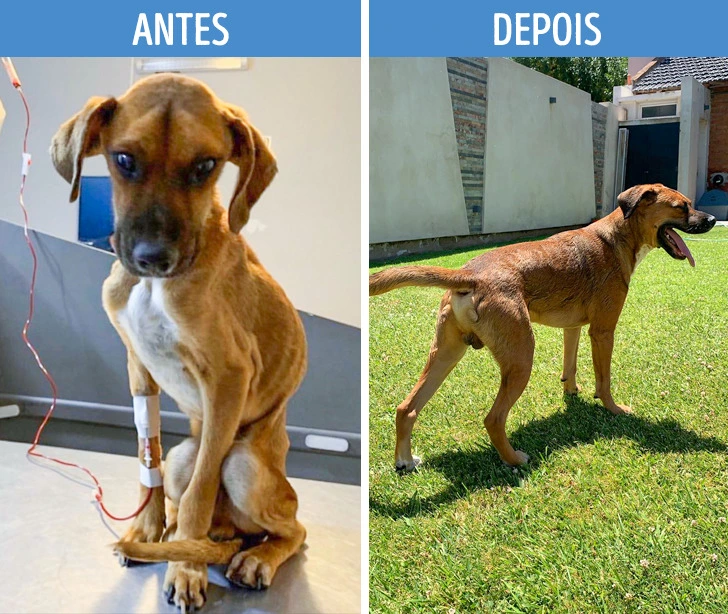
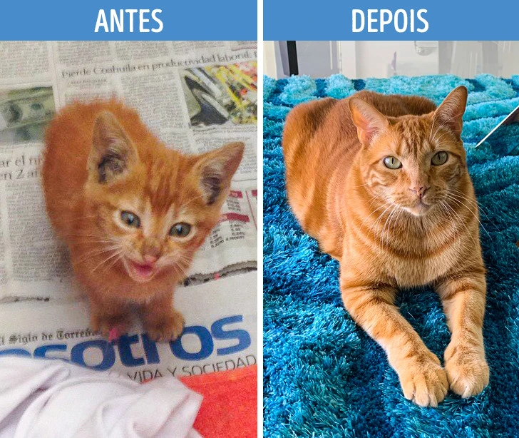
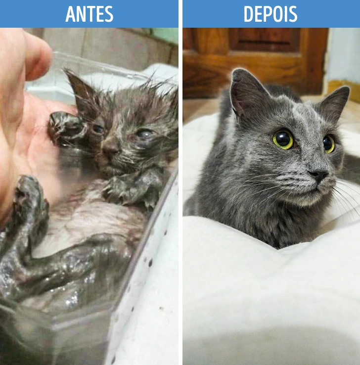
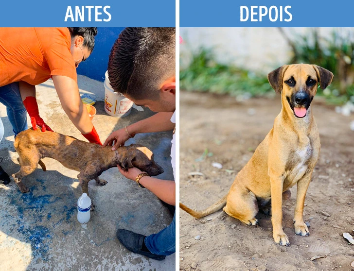
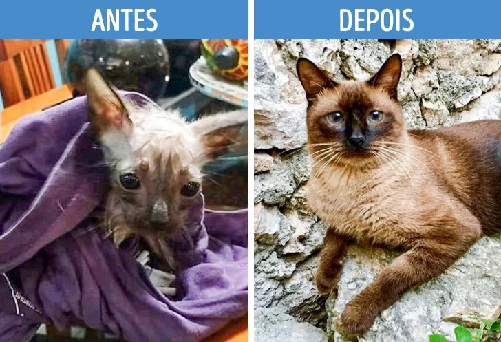

PETS RESGATADOS
Nosso projeto na lovePETS ONG é dedicado a resgatar, cuidar e encontrar lares amorosos para cães e gatos abandonados. Acreditamos que todos os animais merecem uma segunda chance e trabalhamos incansavelmente para proporcionar um futuro melhor para eles.
     

Contato com a ONG lovePETS
Endereço: Rua das Flores, 123 - São Paulo, SP Telefone: (11) 1234-5678 Email:ONGLOVEPETS@GMAIL.COM